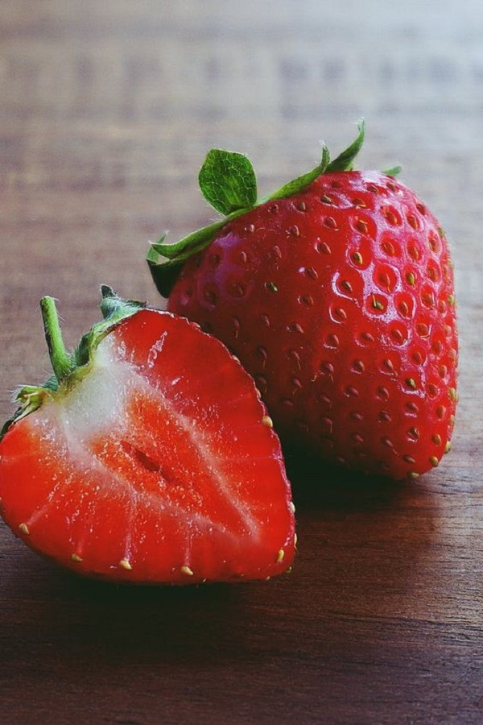

 Алые, покрытые капельками росы, ягоды клубники можно встретить на каждом садовом участке. Неудивительно, ведь эта ягода не только красива, но ещё вкусна и полезна. Сочные свежие плоды клубники, словно тают во рту. На зиму из неё варят варенья, желе, пастилу. Ягоды богаты витаминами А, D, К и Е, группой витаминов В.